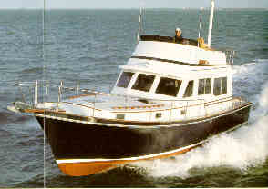
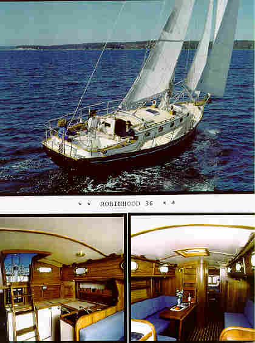

More About Cape Dory
Boats 
Disclaimer: The CDSOA is a private voluntary social
club. The CDSOA and this Web site are not associated with and do not
represent Cape Dory Yachts, which is a division of Newport Shipyards
Corp., nor any of the other businesses or individuals mentioned herein.
The information below was based on a number of conversations with
various people, and was correct to the best of my knowledge as of
August 1995. If you have more accurate or more current information,
please email me.
Note: See also the February 1997 update to
the information below.
Founded in 1963, Cape Dory Yachts soon earned a reputation for building
solid, seaworthy New England sailboats. In the late 70's, they expanded
into powerboats, starting with a commercial dragger and a lobsterboat,
then branching out into poweryachts.
 Unfortunately,
the original Cape Dory Yachts was among the victims of the 1990 recession,
and the name and most of the molds were sold. Fortunately, there are
now three boat builders producing boats using those molds. So, while
a pessimist might say the Cape Dory line has been scattered, a more
cheerful view is that Cape Dorys have gone from being orphan boats
to being supported by not one but three manufacturers: Newport Shipyards, Robinhood
Boatbuilders, and Nauset Marine.
The Cape Dory name and many of the molds were purchased by Newport
Shipyards in Amityville, N.Y. Newport has delivered at least 4 Cape
Dory 40 power yachts (photo right, © Allan Weitz),
most in the Northeast, although one is in Puget Sound. Newport also
advertises the popular 28 foot powerboat in open, enclosed and flybridge
configurations. (Newport has reportedly ceased operations; see update.)
Happily,
Cape Dory's founder, Andy Vavolotis, once
again owns the molds for his 36 and 40 foot sailboats, and is producing
the former as the Robinhood 36 (photos left). According to Robinhood
broker Dave Perry, hull #2 was scheduled for display at the 1995 Newport,
R.I. boat show. In 1995, Joe Bonitch posted the following report on
the rec.boats newsgroup:
"
After noticing [a] discussion [on rec.boats] about Robinhood Marine
building boats from the [old] Cape Dory molds, I was quite surprised
to see the first Robinhood 36 over the weekend. Legacy is actually
hull #200. The owner told me that Cape Dory built less than 150 36's,
and Robinhood decided to start numbering theirs at 200.
"
Legacy was launched late last week at Sill's marina in Sodus
Point, N.Y. on Lake Ontario. The hull is navy blue, and the deck is
white with tan non-skid. She is outfitted in Harken gear, right down
to the bronze self-tailing winches. Harken attended the sea trials
in Maine, and provided some gorgeous female crew (according to the
owner) and took photos to be used in future Harken ads.
"
I was standing beside Legacy on the dock when the owner popped
up and invited my wife and I aboard. She promptly told us to take our
time looking around and to make sure we didn't miss anything.
"
One thing I can safely say about this boat is that it's all business.
They definitely stuck to the KISS methodology. There is no clutter
on deck. The only lines led back on the cabin top are the main and
staysail sheets. Below decks is the same - no clutter, very functional,
and incredible woodwork."
Quite a few former Cape Dory molds are now at
Nauset
Marine, a custom boat builder on Cape Cod. Founded in 1961, Nauset
is "a family owned business, and we're here for the long run," according
to Nauset Vice President Dawson Farber.
Nauset builds from these molds under the Nauset C/D name. They have the molds
for the 30, 33 and 42 foot powerboats, the 30 foot motorsailer, and the 19,
22 30 and 33 foot sailboats. Since they are a custom yard, they will build
boats on order only; they have no dealers and their only stock is a couple
of boats used for boat show display around the Northeast.
Thus far, Nauset has delivered three Nauset 42' Powerboats built from former
Cape Dory molds. The three were configured as a lobsterboat, a charter fishboat,
and a custom yacht. In August 1995 they were just starting hull #1 of the 33'
powerboat, available in three configurations: hardtop cruiser, flybridge, and
with an extended step-up bridge deck.
In the sail fleet, Nauset is building the 19' and 22' Typhoons.
Dawson had hoped to start his C/D line earlier, but had a "sensational year" with
the old Nauset line. The line represents about a third of his available styles.
Over the winter he hopes to begin production of the C/D 30' Motorsailer, as
well as a 30' single engine version of the 33' powerboat.
Owners of existing Cape Dorys have some hope of support from all these builders.
Newport provided a letter from an 'old' Cape Dory owner thanking them for furnishing
some parts. Spartan Marine, makers of most of the metal
forgings used on Cape Dorys, is still in business in Robinhood, Maine. And
Nauset is using different fittings in its new boats, but can duplicate molded
fiberglass parts if necessary.
Hobby Marine currently
has the molds for the CD 300 Motorsailer and are building it as the Cape
300 Motor Sailer. They
can
be
contacted
at: P.O.
Box
220, Pollocksville,
NC
28573.
Phone:
(252) 224-1600.

Where to find them:
Robinhood Boatbuilders (Andy Vavolotis)
Dave Perry, Yacht Broker
Robinhood Marine Center
Robinhood, ME 04530
(800) 255-5206
Nauset Marine
Dawson Farber, V.P.
Route 6A
P.O. Box 357
Orleans, MA 02653
(508) 255-0777
Spartan Marine
Robinhood Marine Center
Robinhood, ME 04530
(800) 325-3287
Photo ©1992 Allan Weitz (908) 572-5301. Used by
permission.